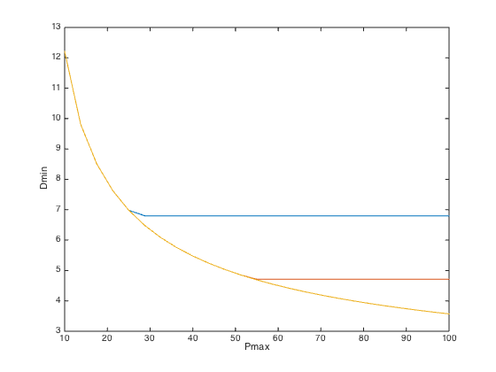

% Boyd, Kim, Vandenberghe, and Hassibi, "A Tutorial on Geometric Programming" % Written for CVX by Almir Mutapcic 02/08/06 % (a figure is generated) % % Solves the problem of choosing gate scale factors x_i to give % minimum ckt delay, subject to limits on the total area and power. % % minimize D % s.t. P <= Pmax, A <= Amax % x >= 1 % % where variables are scale factors x. % % This code is specific to the digital circuit shown in figure 4 % (page 28) of GP tutorial paper. All the constraints and % the worst-case delay expression are hard-coded for this % particular circuit. % % A more general code with more precise models for digital cicuit % sizing is also available as part of the CVX examples library. % number of cells m = 7; % problem constants f = [1 0.8 1 0.7 0.7 0.5 0.5]'; e = [1 2 1 1.5 1.5 1 2]'; Cout6 = 10; Cout7 = 10; a = ones(m,1); alpha = ones(m,1); beta = ones(m,1); gamma = ones(m,1); % varying parameters for an optimal trade-off curve N = 25; Pmax = linspace(10,100,N); Amax = [25 50 100]; min_delay = zeros(length(Amax),N); disp('Generating the optimal tradeoff curve...') for k = 1:length(Amax) fprintf( 'Amax = %d:\n', Amax(k) ); for n = 1:N fprintf( ' Pmax = %6.2f: ', Pmax(n) ); cvx_begin gp quiet % optimization variables variable x(m) % scale factors % input capacitance is an affine function of sizes cin = alpha + beta.*x; % load capacitance of a gate is the sum of its fan-out c_in's clear cload; % start with a fresh variable cload(1) = cin(4); cload(2) = cin(4) + cin(5); cload(3) = cin(5) + cin(7); cload(4) = cin(6) + cin(7); cload(5) = cin(7); % output gates have their load capacitances cload(6) = Cout6; cload(7) = Cout7; % gate delay is the product of its driving res. R = gamma./x and cload d = (cload').*gamma./x; power = (f.*e)'*x; % total power area = a'*x; % total area % evaluate delay over all paths in the given circuit (there are 7 paths) path_delays = [ ... d(1) + d(4) + d(6); % delay of path 1 d(1) + d(4) + d(7); % delay of path 2, etc... d(2) + d(4) + d(6); d(2) + d(4) + d(7); d(2) + d(5) + d(7); d(3) + d(5) + d(6); d(3) + d(7) ]; % overall circuit delay circuit_delay = ( max(path_delays) ); % objective is the worst-case delay minimize( circuit_delay ) subject to % construct the constraints x >= 1; % all sizes greater than 1 (normalized) power <= Pmax(n); % power constraint area <= Amax(k); % area constraint cvx_end fprintf( 'delay = %3.2f\n', cvx_optval ); min_delay(k,n) = cvx_optval; end end % plot the tradeoff curve plot(Pmax,min_delay(1,:), Pmax,min_delay(2,:), Pmax,min_delay(3,:)); xlabel('Pmax'); ylabel('Dmin'); disp('Optimal tradeoff curve plotted.')
Generating the optimal tradeoff curve...
Amax = 25:
Pmax = 10.00: delay = 12.21
Pmax = 13.75: delay = 9.81
Pmax = 17.50: delay = 8.51
Pmax = 21.25: delay = 7.63
Pmax = 25.00: delay = 6.98
Pmax = 28.75: delay = 6.80
Pmax = 32.50: delay = 6.80
Pmax = 36.25: delay = 6.80
Pmax = 40.00: delay = 6.80
Pmax = 43.75: delay = 6.80
Pmax = 47.50: delay = 6.80
Pmax = 51.25: delay = 6.80
Pmax = 55.00: delay = 6.80
Pmax = 58.75: delay = 6.80
Pmax = 62.50: delay = 6.80
Pmax = 66.25: delay = 6.80
Pmax = 70.00: delay = 6.80
Pmax = 73.75: delay = 6.80
Pmax = 77.50: delay = 6.80
Pmax = 81.25: delay = 6.80
Pmax = 85.00: delay = 6.80
Pmax = 88.75: delay = 6.80
Pmax = 92.50: delay = 6.80
Pmax = 96.25: delay = 6.80
Pmax = 100.00: delay = 6.80
Amax = 50:
Pmax = 10.00: delay = 12.21
Pmax = 13.75: delay = 9.81
Pmax = 17.50: delay = 8.51
Pmax = 21.25: delay = 7.63
Pmax = 25.00: delay = 6.98
Pmax = 28.75: delay = 6.48
Pmax = 32.50: delay = 6.08
Pmax = 36.25: delay = 5.75
Pmax = 40.00: delay = 5.48
Pmax = 43.75: delay = 5.24
Pmax = 47.50: delay = 5.03
Pmax = 51.25: delay = 4.85
Pmax = 55.00: delay = 4.71
Pmax = 58.75: delay = 4.71
Pmax = 62.50: delay = 4.71
Pmax = 66.25: delay = 4.71
Pmax = 70.00: delay = 4.71
Pmax = 73.75: delay = 4.71
Pmax = 77.50: delay = 4.71
Pmax = 81.25: delay = 4.71
Pmax = 85.00: delay = 4.71
Pmax = 88.75: delay = 4.71
Pmax = 92.50: delay = 4.71
Pmax = 96.25: delay = 4.71
Pmax = 100.00: delay = 4.71
Amax = 100:
Pmax = 10.00: delay = 12.21
Pmax = 13.75: delay = 9.81
Pmax = 17.50: delay = 8.51
Pmax = 21.25: delay = 7.63
Pmax = 25.00: delay = 6.98
Pmax = 28.75: delay = 6.48
Pmax = 32.50: delay = 6.08
Pmax = 36.25: delay = 5.75
Pmax = 40.00: delay = 5.48
Pmax = 43.75: delay = 5.24
Pmax = 47.50: delay = 5.03
Pmax = 51.25: delay = 4.85
Pmax = 55.00: delay = 4.69
Pmax = 58.75: delay = 4.55
Pmax = 62.50: delay = 4.42
Pmax = 66.25: delay = 4.30
Pmax = 70.00: delay = 4.19
Pmax = 73.75: delay = 4.09
Pmax = 77.50: delay = 4.00
Pmax = 81.25: delay = 3.92
Pmax = 85.00: delay = 3.84
Pmax = 88.75: delay = 3.77
Pmax = 92.50: delay = 3.70
Pmax = 96.25: delay = 3.63
Pmax = 100.00: delay = 3.57
Optimal tradeoff curve plotted.
